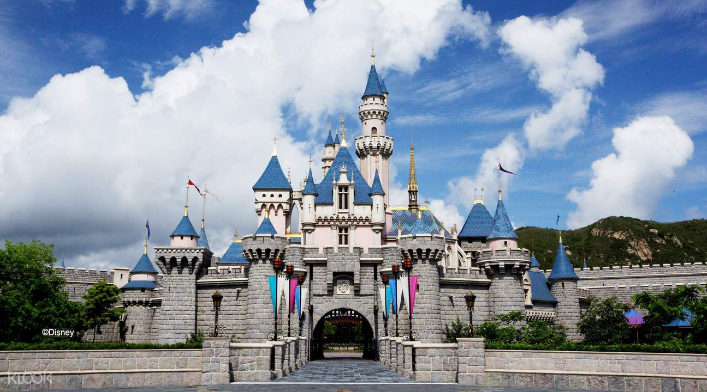

관심있는
'아시아의 작은 유럽','동양의 라스베이거스' 등 많은 수식어와 함께 높고 화려한 빌딩과 많은 세계문화유산을 보유하고 있는 도시. 유럽과 아시아를 동시에 느낄 수 있는 곳으로 성 바울 성당, 성 미구엘 성당 등 유럽풍의 건축물과 나차 사원과 같은 동양의 분위기를 풍기는 다양한 명소를 한번에 볼 수 있다. 마카오 타워와 수많은 호텔의 야경은 빼놓을 수 없는 볼거리이다. 포르투갈요리와 광둥요리가 섞인 매캐니즈 요리가 발달하여 미식가들을 사로잡고 있다.
홍콩 디즈니랜드(Hong kong Disneyland)는 홍콩 란타우 섬에 있는 테마파크이다. 에너하임, 올랜도, 도쿄, 파리 다음으로 전세계 디즈니파크 중에서 5번째로 생겼다. 유일하게 제 2의 파크가 없는 시설이다.
우리나라의 압구정동과 분위기가 비슷한 란콰이퐁은 홍콩에서도 세련된 거리로 잘 알려진 곳. 해가 저물면 레스토랑, 바(Bar), 라이브 하우스 등으로 사람들이 하나둘씩 모이기 시작한다. 거리는 항상 젊은이들로 넘치며 늘 축제 같은 분위기다. 100여 개 상점이 밀집해 있는데, 특히 서양 사람이 운영하는 곳이 많아 이국적인 느낌이 강하다. 상점에서 다양한 국적의 손님들을 볼 수 있다